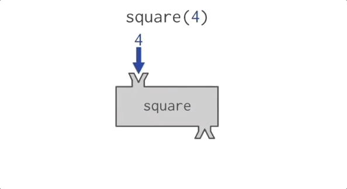

Fullscreen mode
Just press »F« on your keyboard to show your presentation in fullscreen mode. Press the »ESC« key to exit fullscreen mode.
Overview mode
Press "Esc" or "o" keys to toggle the overview mode on and off. While you're in this mode, you can still navigate between slides, as if you were at 1,000 feet above your presentation.
Python and The Basics of Programming.
Functions
Lesson 5
Author: Egoshkin Danila Igorevichm
Functions (and recursion)
Functions in math
A function -
f(x)=x*x
y(x)=x*x
y=x*x
y(10)=100
----OR-----
f(x)=x*x
f(x){
return x*x
}
outputType f(inputType x){
return x*x
}
Function with args

Function square
Functions in programming
A function - the a small block of code, that performs some operation and runs only when it is called.
#include <iostream>
void hello() // function
{ // {
// ... function body
// }
std::cout << "hello world" << std::endl;
}
int main(){
hello(); // the calling of the function hello()
return 0;
}
-768.png)
Main() function...
#include <iostream>
int main(){ // function main() // output type is int
std::cout << "hello world" << std::endl;
return 0; // returns int 0 value
}
Add player function
#include <iostream>
int main(){
std::cout << "The game for 4 players:" << endl;
std::cout << "Enter the names of you friends:" << endl;
// Data block
char player1[100];
// Input block
std::cout << "Player 1: ";
std::cin >> player1;
// Data block
char player2[100];
// Input block
std::cout << "Player 2: ";
std::cin >> player2;
// Data block
char player3[100];
// Input block
std::cout << "Player 3: ";
std::cin >> player3;
// Data block
char player4[100];
// Input block
std::cout << "Player 4: ";
std::cin >> player4;
return 0;
}
#include <iostream>
int main(){
int array1[5] = {1,2,3,4,5}; // Array 1
for(int i = 0; i < 5; i++){
std::cout << "Array1[" << i+1 << "]: " << array1[i] << "\n";
}
int array2[7] = {1, 2, 3, 4, 5, 6, 7}; // Array 2
for(int i = 0; i < 5; i++){
std::cout << "Array2[" << i+1 << "]: " << array1[i] << "\n";
}
int array3[10] = {1, 2, 3, 4, 5, 6, 7, 8, 9, 10}; // Array 3
for(int i = 0; i < 5; i++){
std::cout << "Array3[" << i+1 << "]: " << array1[i] << "\n";
}
return 0;
}
DRY - Don't repeat yourself
https://en.wikipedia.org/wiki/Don%27t_repeat_yourselfLinks: